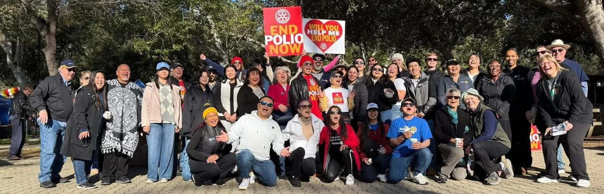

Serving Our Community
Ongoing support for Granada Hills Veterans Park, local schools, food drives, holiday projects, and partnerships with neighborhood organizations.
The largest Rotary club in the north San Fernando Valley — neighbors, professionals, and community leaders serving Granada Hills and the world.
The Rotary Club of Granada Hills brings together business and community leaders who believe in Service Above Self — building friendships while tackling real needs close to home and around the globe.
Each week, we meet for fellowship, local speakers, and planning hands‑on projects that support youth, veterans, families, and international humanitarian work.
Thursdays at 12:00 PM
Porter Valley Country Club, Northridge
Guests and prospective members are always welcome. Let us know you’re coming, or just drop in and say hello.
Learn about membership
From local parks to global health, our projects focus on practical, high‑impact service.
Ongoing support for Granada Hills Veterans Park, local schools, food drives, holiday projects, and partnerships with neighborhood organizations.

Scholarships, leadership camps, youth recognition, and support for Interact and other student‑led service clubs throughout the area.

Partnering with Rotary International to fight polio, respond to disasters, and support clean water, health, and education projects worldwide.
People join for the service — and stay for the friendships, networking, and shared sense of purpose.
Granada Hills Rotary is a welcoming mix of long‑time members and newer Rotarians, representing many professions and backgrounds across the San Fernando Valley.
You’ll find hands‑on workers, community advocates, business owners, and civic leaders who like to get things done — and have fun doing it.
Whether you have an hour a month or a full day to give, there’s a place for you: